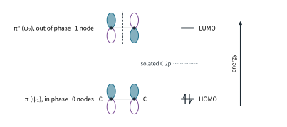
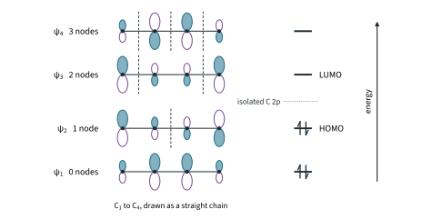
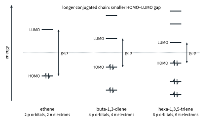
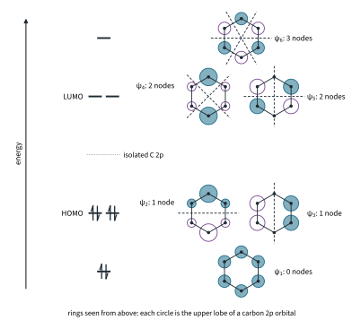
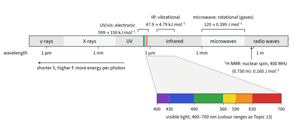
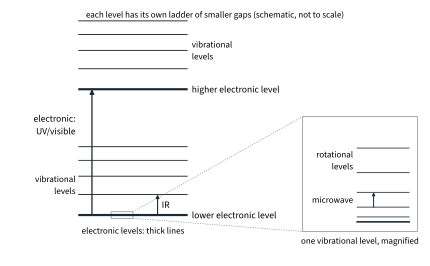
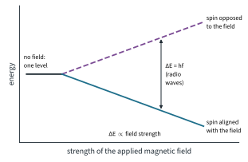
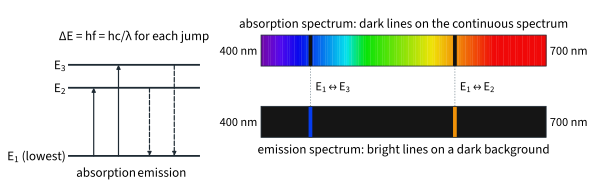

Molecular Orbitals and Light 2
Chapter H3.1 · Molecular Orbitals and Light Part 2
On this page
Introduction
Part 1 built MOs for two atoms. Many molecules, and almost every coloured one, have a conjugated chain or ring of carbon atoms whose p orbitals all overlap, so their π electrons spread over the whole chain. This Part applies the same LCAO ideas to those π systems: ethene, buta-1,3-diene, hexa-1,3,5-triene and benzene. You will see that the gap between the HOMO and the LUMO gets smaller as the chain gets longer.
Then it turns to light. A molecule can absorb a photon only if the photon's energy matches the gap between two of its energy levels, and different kinds of level (electronic, vibrational, rotational and nuclear spin) need very different photons. That is the basis of the spectroscopic methods in H3: UV/visible and IR spectroscopy (H3.2) and NMR (H3.3) build on this Part. (Mass spectrometry, H3.4, is the one technique in H3 that does not use light.) You need 11.1 Part 1 (hybridisation, ethene and benzene) and Topic 13 Part 2 (ΔE = hf and colour) from H2.
Key terms
You will use these terms throughout this Part.
| Term | Meaning |
|---|---|
| Conjugated system | An unbroken chain or ring of adjacent sp2 (or sp) atoms whose p orbitals overlap side-on to form one π system. |
| Delocalised | Spread over more than two atoms. |
| Node (in a π MO) | A nodal plane perpendicular to the molecular plane, between or through atoms, where the π MO changes sign. |
| HOMO–LUMO gap | The energy difference between the HOMO and the LUMO. |
| Electromagnetic (EM) radiation | Energy travelling as linked electric and magnetic waves at the speed of light: γ-rays, X-rays, UV, visible light, infrared, microwaves and radio waves. |
| Wavelength, λ | The distance between neighbouring crests of the wave. |
| Frequency, f | The number of waves passing a point each second, in hertz (Hz = s−1). |
| Wavenumber, ν̃ | The number of waves per unit length: ν̃ = 1/λ, usually in cm−1. |
| Photon | A discrete packet (quantum) of electromagnetic energy, E = hf. |
| Quantised | Able to take only certain definite values, not any value. |
| Absorption | Taking in a photon whose energy matches a gap between two levels; the molecule (or atom) goes to the higher level. |
| Emission | Giving out a photon as a molecule (or atom) drops to a lower level; the photon carries the energy difference. |
| Spectrum | A record of how much radiation is absorbed or emitted at each wavelength (or frequency). |
Two models of bonding
Each sp2 carbon has one unhybridised 2p orbital at right angles to the plane of the σ framework. Neighbouring p orbitals overlap side-on, so all the p orbitals along a chain of sp2 carbons combine together into one set of π MOs.
Every π MO has the plane of the carbon atoms as a nodal plane: the p orbitals have their lobes above and below it. So the nodes counted in this Part are the extra nodal planes perpendicular to the molecular plane, between or through atoms, where the π MO changes sign. In the figures the linear polyenes are drawn as a straight chain for clarity; each p orbital is drawn with its lobe size in proportion to its share of the MO (its coefficient), shaded = positive and open = negative.
Ethene
Worked example 1: ethene
Use LCAO to obtain the π MOs of ethene. Identify the HOMO and LUMO.
(To answer this, you have to combine the two carbon p orbitals in phase and out of phase, exactly as for two 1s AOs in Part 1.)
- In phase: π, also called ψ1: the lobes on the same side match, density builds up above and below the C–C axis, 0 nodes, lower in energy than a carbon 2p AO: bonding.
- Out of phase: π*, also called ψ2: a node between the carbons, 1 node, higher in energy: antibonding.

Ethene has 2 π electrons (one from each carbon). They fill π, so HOMO = π (ψ1), LUMO = π* (ψ2). This is the π bond of 11.1 Part 1, made by sideways overlap. Twisting one CH2 group through 90° would turn its p orbital at right angles to the other, destroying the overlap and the bonding π MO. That costs a lot of energy, so rotation about C=C is restricted.
Buta-1,3-diene
Worked example 2: buta-1,3-diene
CH2=CH–CH=CH2 has four adjacent sp2 carbons. Describe its π MOs, and identify the HOMO and LUMO.
(To answer this, you have to use "n AOs give n MOs": four p orbitals give four π MOs, ψ1 to ψ4, with 0, 1, 2 and 3 nodes.)

In Fig 11, energy rises with the number of nodes. ψ1 and ψ2 lie below the energy of an isolated p orbital (bonding); ψ3 and ψ4 lie above it (antibonding). The 4 π electrons fill ψ1 and ψ2: HOMO = ψ2 (1 node), LUMO = ψ3 (2 nodes).
ψ1 has no nodes at all: it spreads over all four carbons, including the bond between C2 and C3. So that central C–C bond has some double-bond character, and the four π electrons are delocalised, not held in two separate C=C bonds.
The gap shrinks with conjugation
Worked example 3: hexa-1,3,5-triene and the trend
Hexa-1,3,5-triene, CH2=CH–CH=CH–CH=CH2, has six conjugated carbons. Identify its HOMO and LUMO, and compare its HOMO–LUMO gap with those of ethene and buta-1,3-diene.
(To answer this, you have to apply the polyene rules with N = 6.)
Six p orbitals give six π MOs; the 6 π electrons fill ψ1, ψ2 and ψ3. So HOMO = ψ3 (2 nodes), LUMO = ψ4 (3 nodes). Fig 12 puts the three ladders side by side: as the chain grows, the MOs crowd closer together and the gap between HOMO and LUMO shrinks.

The lowest-energy electronic absorption promotes an electron from the HOMO to the LUMO (a π → π* transition), so the photon energy at the absorption maximum, λmax, measures the gap: ΔE = hc/λmax (worked example 6(c) shows the calculation):
| Molecule | Conjugated carbons | λmax / nm (literature) | Photon energy / kJ mol−1 |
|---|---|---|---|
| ethene | 2 | about 171 (vacuum UV) | 700 |
| buta-1,3-diene | 4 | 217 | 552 |
| hexa-1,3,5-triene | 6 | about 258 | 464 |
The longer the conjugated chain, the smaller the HOMO–LUMO gap and the longer the wavelength absorbed. The HOMO–LUMO gap is what a UV/visible spectrometer measures: H3.2 takes this further.
Benzene
Worked example 4: benzene
Describe the π MOs of benzene, identify the HOMO and LUMO, and explain why benzene is unusually stable.
(To answer this, you have to combine six p orbitals round a ring: six π MOs, now drawn as top views of the ring.)
Benzene's six sp2 carbons each give one p orbital, and the ring has no ends, so all six combine into six π MOs in a 1-2-2-1 pattern (Fig 13):
- ψ1: all six p orbitals in phase, no nodes: lowest;
- ψ2 and ψ3: degenerate, one nodal plane each;
- ψ4 and ψ5: degenerate, two nodal planes each;
- ψ6: three nodal planes, the signs alternating round the ring: highest.
The 6 π electrons fill ψ1, ψ2 and ψ3. So the HOMO is the degenerate pair ψ2/ψ3 and the LUMO is the degenerate pair ψ4/ψ5. All six π electrons are in bonding MOs, and ψ1 spreads evenly round the whole ring: the "ring of electron density above and below" of 11.1 Part 1. Having every π electron in a bonding, delocalised MO lowers the energy below that of three separate C=C bonds. This extra stability is the delocalisation energy of 11.3 Part 3 and 11.4 Part 2, about 150 kJ mol−1 (from hydrogenation enthalpies, literature values).2

Light: waves and photons
Light, and all electromagnetic radiation, behaves in two ways. It travels as waves, and it is absorbed or emitted in packets.
Here c = 3.00 × 108 m s−1, h = 6.63 × 10−34 J s (the Planck constant)4 and L = 6.02 × 1023 mol−1, all from the Data Booklet. You met E = hf = hc/λ for d-d transitions in Topic 13 Part 2. Because E = hc/λ, shorter wavelength means higher frequency and more energy per photon. Wavenumber is proportional to energy, which is why IR spectroscopy (H3.2) uses it.
Worked example 5: photon calculations
(a) A sodium street lamp emits light of wavelength 589 nm (literature value). Calculate the frequency, the energy of one photon and the energy of one mole of photons. (b) (Further example) The Cl–Cl bond energy is 244 kJ mol−1 (Data Booklet). Find the longest wavelength of light that can break a Cl–Cl bond.
(To answer part (a), you have to convert 589 nm to metres, then use c = fλ and E = hf; keep the unrounded values between steps.)
f = c / λ = (3.00 × 108) / (589 × 10−9) = 5.0934 × 1014 Hz = 5.09 × 1014 Hz
E = hf = (6.63 × 10−34) × (5.0934 × 1014) = 3.3769 × 10−19 J = 3.38 × 10−19 J
per mole: (3.3769 × 10−19) × (6.02 × 1023) = 2.0329 × 105 J mol−1 = 203 kJ mol−1
(To answer part (b), you have to turn the bond energy into the energy needed per bond, J per molecule, then find the wavelength of a photon with that energy. Light can break a bond if one photon carries at least the bond energy per molecule.)
E per bond = (244 000) / (6.02 × 1023) = 4.0532 × 10−19 J
λ = hc / E = (6.63 × 10−34 × 3.00 × 108) / (4.0532 × 10−19) = 4.9073 × 10−7 m = 491 nm
So light of wavelength 491 nm or shorter (about 490 nm) (visible light at the blue end, and UV) can break the Cl–Cl bond. Longer wavelengths carry less energy per photon, and no number of them can break a bond one photon at a time. This is why light starts the radical chlorination of alkanes (11.3 Part 3); 11.5 Enrichment compared C–Cl (352 nm) and C–F (247 nm) in the same way.5
The electromagnetic spectrum and spectroscopy
Fig 14 arranges electromagnetic radiation by wavelength, on a scale where each step is a factor of 1000. The boundaries between regions are conventions, and sources differ slightly: treat them as approximate. Each kind of spectroscopy uses the region whose photons match a particular kind of energy gap in molecules. The table below summarises the regions.

| Region | Approximate λ | What it changes in a molecule | Technique | Energy per mole |
|---|---|---|---|---|
| γ-rays, X-rays | below 10 nm | removes electrons (ionises) | not used in H3 Section 1 | very large |
| ultraviolet (UV) | 10–400 nm | electronic levels: promotes electrons, e.g. HOMO → LUMO | UV/visible spectroscopy, about 200–800 nm (typical instrument range; 599 kJ mol−1 at 200 nm to 150 kJ mol−1 at 800 nm) | more than 299 kJ mol−1 |
| visible | 400–700 nm | electronic levels (coloured compounds) | UV/visible spectroscopy | 299 down to 171 kJ mol−1 (400 to 700 nm) |
| infrared (IR) | 700 nm–1 mm | vibrational levels | IR spectroscopy, 4000–400 cm−1 (2.5–25 µm; typical instrument range) | 47.9 to 4.79 kJ mol−1 (for 4000–400 cm−1) |
| microwaves | 1 mm–0.3 m (about 1–300 GHz) | rotational levels (gases) | rotational (microwave) spectroscopy | 120 to 0.399 J mol−1 |
| radio waves | longer than about 0.3 m | nuclear spin levels in a magnetic field | NMR, e.g. 400 MHz for 1H | 0.160 J mol−1 at 400 MHz |
Quantised energy levels
The energy of a molecule is quantised: it can have only certain definite values. Part 1 showed this for electrons: each MO is a discrete electronic energy level, and moving an electron from one MO to another (for example HOMO → LUMO) is an electronic transition. But a molecule also vibrates and rotates, and those motions are quantised too (Fig 15):
- electronic levels: electrons in different MOs; the gaps need UV or visible photons;
- each electronic level has a ladder of vibrational levels (the bonds stretching and bending); the gaps need IR photons;
- each vibrational level has a ladder of rotational levels (the molecule turning); the gaps need microwave photons.

Nuclear spin levels
Some nuclei, such as 1H, behave like tiny magnets: they have a property called spin (1H has spin ½). With no magnetic field the two possible spin states of a 1H nucleus have the same energy. In an applied magnetic field they split into two energy levels: spin aligned with the field (lower) and spin opposed to the field (higher) (Fig 16).

Worked example 6: one photon from each region
Calculate the energy per mole of photons for (a) IR radiation of wavenumber 1700 cm−1 (typical of a C=O stretch: the Data Booklet IR table gives C=O between 1640 and 1750 cm−1, depending on the functional group; met again in H3.2), (b) the 400 MHz radio waves of an NMR spectrometer and (c) buta-1,3-diene's absorption at 217 nm. Say which kind of energy level each matches.
(To answer part (a), you have to convert cm−1 to m−1 by multiplying by 100 before finding λ.)
(a) λ = 1 / (1700 × 100) = 5.882 × 10−6 m = 5.88 µm
f = c / λ = (3.00 × 108) × (1700 × 100) = 5.10 × 1013 Hz
E = hf = (6.63 × 10−34) × (5.10 × 1013) = 3.3813 × 10−20 J
per mole: (3.3813 × 10−20) × (6.02 × 1023) = 2.0355 × 104 J mol−1 = 20.4 kJ mol−1
(b) λ = c / f = (3.00 × 108) / (400 × 106) = 0.750 m
E = hf = (6.63 × 10−34) × (400 × 106) = 2.652 × 10−25 J
per mole: (2.652 × 10−25) × (6.02 × 1023) = 0.160 J mol−1 (1.60 × 10−4 kJ mol−1)
(c) E = hc / λ = (6.63 × 10−34 × 3.00 × 108) / (217 × 10−9) = 9.1659 × 10−19 J
per mole: (9.1659 × 10−19) × (6.02 × 1023) = 5.5179 × 105 J mol−1 = 552 kJ mol−1
(a) matches a vibrational gap, (b) a nuclear spin gap in the magnetic field and (c) an electronic gap (HOMO → LUMO). The energies differ by a factor of over three million, which is why each technique needs its own region of the spectrum:
| Kind of level | Region | Typical energy per mole | Technique |
|---|---|---|---|
| electronic | UV, visible | about 150–600 kJ mol−1 | UV/visible spectroscopy (H3.2) |
| vibrational | infrared | about 5–50 kJ mol−1 | IR spectroscopy (H3.2) |
| rotational | microwave | about 0.4–120 J mol−1 | rotational spectroscopy (gases) |
| nuclear spin (in a field) | radio | 0.160 J mol−1 at 400 MHz | NMR (H3.3) |
Order of gaps: electronic > vibrational > rotational > nuclear spin (at the fields used in NMR).
Absorption and emission
- An absorption spectrum: radiation of all wavelengths is passed through the sample, and photons whose energy matches a gap are removed, leaving dark lines (or absorption peaks) at those wavelengths.
- An emission spectrum: an excited sample (heated, or in an electric discharge) gives out photons as it drops to lower levels: bright lines on a dark background.
Because the same gaps are involved, absorption and emission lines appear at the same wavelengths for transitions between the same pair of levels (Fig 17). The line spectra of atoms are evidence that energy levels are quantised: if an atom could have any energy, it would absorb and emit a continuous band, not sharp lines.

Molecules in solution give broad absorption bands, not sharp lines, because each electronic transition can end on many different vibrational and rotational sublevels of the upper electronic level; H3.2 takes this up. For a closed-shell molecule, such as every π system in this Part, the lowest-energy electronic absorption promotes an electron from the HOMO to the LUMO: ΔE(HOMO–LUMO) = hc/λ. For a π system this is a π → π* transition, as in worked example 3.
Worked example 7 (Further example): hydrogen's red line
Hydrogen gas in a discharge tube glows, and one bright line in its emission spectrum is at 656 nm (literature value). Calculate the energy gap, per mole, between the two levels involved.
(To answer this, you have to use ΔE = hf = hc/λ for one atom, then multiply by L.)
f = c / λ = (3.00 × 108) / (656 × 10−9) = 4.5732 × 1014 Hz
ΔE = hf = (6.63 × 10−34) × (4.5732 × 1014) = 3.0320 × 10−19 J
per mole: (3.0320 × 10−19) × (6.02 × 1023) = 1.8253 × 105 J mol−1 = 182.5 kJ mol−1, about 183 kJ mol−1
The hydrogen atom has a gap of about 183 kJ mol−1 (182.5) between two of its electron energy levels, and only photons of that energy (656 nm) are emitted for that drop. A dark line appears at 656 nm in an absorption spectrum only if some atoms are already in the lower level of that pair, as in a hot gas such as the Sun's outer atmosphere: those atoms absorb photons of exactly that energy, and as they drop back the light is re-emitted in all directions, so less of it carries on towards the observer. Cold hydrogen, with its atoms in the lowest level, absorbs only in the UV.6
Summary
The ideas of this Part in one table.
| Idea | Key points |
|---|---|
| Conjugation | Only p orbitals on adjacent sp2 (or sp) carbons in an unbroken chain form one π system; an sp3 carbon breaks it. Hybridisation for the σ framework, MOs for the π system. |
| Linear polyenes | N p orbitals → N π MOs; ψk has k − 1 nodes; energy rises with nodes; HOMO ψN/2, LUMO ψN/2+1; longer chain, smaller HOMO–LUMO gap, longer λmax. |
| Benzene | Six π MOs, 1-2-2-1, nodes 0, 1, 1, 2, 2, 3; HOMO degenerate ψ2/ψ3, LUMO degenerate ψ4/ψ5; all six π electrons bonding: extra stability (about 150 kJ mol−1). |
| Equations | c = fλ; E = hf = hc/λ; per mole × L; ν̃ = 1/λ, E = hcν̃ (ν̃ in m−1); light breaks a bond if E(photon) ≥ (bond energy in J mol−1) / L. |
| Levels | Electronic (UV/visible, about 150–600 kJ mol−1) > vibrational (IR, about 5–50 kJ mol−1) > rotational (microwave, J mol−1) > nuclear spin in a field (radio, 0.160 J mol−1 at 400 MHz; ΔE ∝ field strength). |
| Transitions | ΔE = hf exactly; absorption: dark lines or peaks; emission: bright lines, same wavelengths; line spectra show quantisation; HOMO → LUMO is the lowest-energy electronic absorption of a closed-shell molecule. |
Additional information
- Beyond the syllabus: with an odd number of conjugated carbons (for example the three-carbon allyl system) the middle π MO has the same energy as an isolated p orbital: it is non-bonding. ↩
- Beyond the syllabus: in the simple model used for Figs 10 to 13, benzene's HOMO–LUMO gap equals ethene's, yet benzene absorbs at a longer wavelength than ethene. The model ignores the repulsion between electrons, so its gaps do not predict wavelengths (H3.2). ↩
- Beyond the syllabus: 9813 does not ask for wavenumbers, but you need them to read the Data Booklet IR table (H3.2). ↩
- Beyond the syllabus: Max Planck introduced the constant h in 1900 to explain the radiation given out by hot objects, by assuming that energy is emitted in packets of size hf. Einstein extended the idea to light itself in 1905 (the photoelectric effect). ↩
- Beyond the syllabus: Cl2 absorbs most strongly near 330 nm (literature value), in the UV, though any photon with a wavelength up to 491 nm (about 490 nm) carries enough energy to break the bond. ↩
- Beyond the syllabus: the 656 nm line is the drop from the third to the second electron energy level of the hydrogen atom (n = 3 → n = 2). Cold hydrogen atoms are nearly all in the lowest level (n = 1), and every absorption from n = 1 needs a UV photon. In the Sun's hot outer layers some atoms are in n = 2, so the Sun's spectrum shows dark hydrogen lines in the visible. ↩